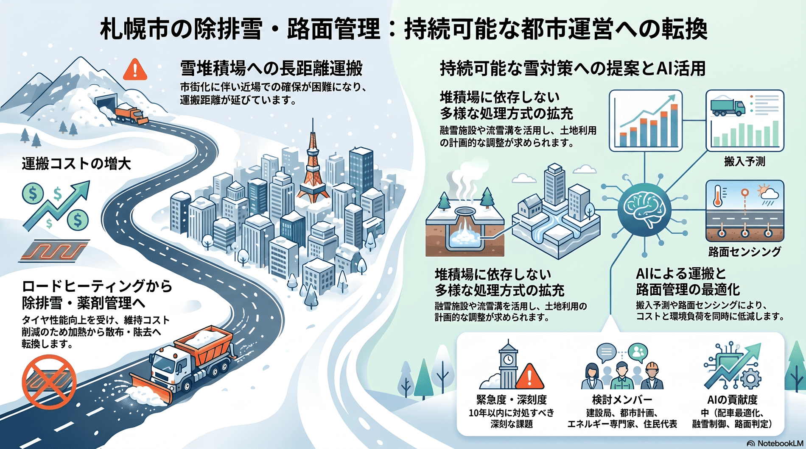

雪・寒冷地
10年以内
雪堆積場の確保と路面管理方式の転換
雪の捨て場の確保が年々難しくなり、設備の維持方針も見直しが進む。

背景
排雪した大量の雪は雪堆積場へ運ばれるが、市街化が進むほど近場の堆積場は確保しにくくなり、運搬距離とコストが増す。一方で凍結対策のロードヒーティングは、タイヤや凍結防止剤の性能向上を背景に維持コストの観点から停止が進められている。
事実
- 札幌市はロードヒーティングについて、スタッドレスタイヤや凍結防止剤の性能向上、管理コストを考慮し、除排雪と凍結防止剤による路面管理への変更（停止）を進めている。
解釈
雪の最終処理先と路面管理方式は、コスト・環境・安全のバランスで絶えず見直しを迫られる。堆積場の遠隔化は除排雪費の上昇に直結する。
提案
- 融雪施設・流雪溝など堆積場に依存しない処理の拡充（エネルギーコストとのトレードオフ）。
- 雪堆積場の計画的確保と跡地利用との調整。
検討体制・メンバー
札幌市建設局が堆積場運営と路面管理を担う。検討会には都市計画・土地利用の部局、融雪技術やエネルギーの専門家、河川・環境部局、用地周辺の住民代表を加え、処理方式と立地を一体で検討するとよい。
AIノート
AIの貢献度は中。堆積場の搬入量予測と運搬配車の最適化、融雪施設のエネルギー制御に役立つ。路面状態のセンシングとAI判定で凍結防止剤の散布を最適化すれば、コストと環境負荷を同時に下げられる可能性がある。